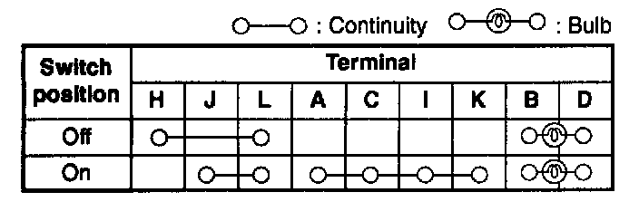
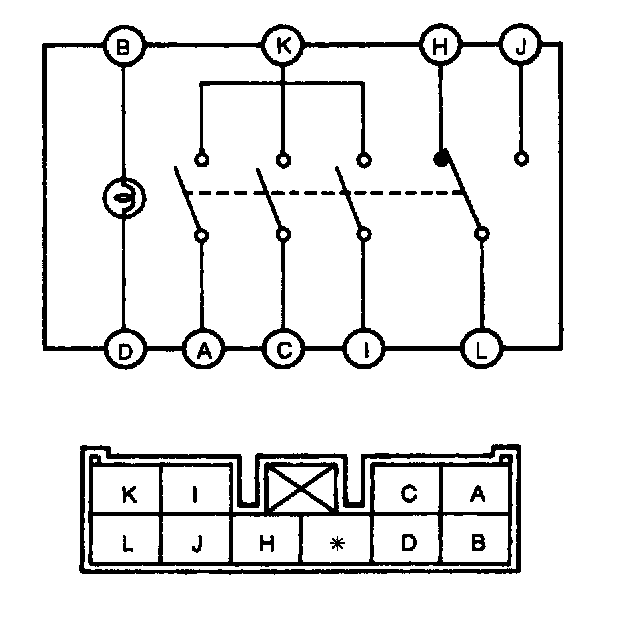

Operation CHARM
: Car repair manuals for everyone.
Home
>>
Mazda
>>
1999
>>
MX-5 Miata L4-1.8L DOHC
>>
Repair and Diagnosis
>>
Lighting and Horns
>>
Hazard Warning Lamps
>>
Hazard Warning Switch
>>
Testing and Inspection
Hazard Warning Switch: Testing and Inspection
1.
Remove the
hazard warning switch
.


2.
Inspect for continuity between the
hazard warning switch
terminals by using an ohmmeter.
3.
If not as specified, replace the
hazard warning switch
.